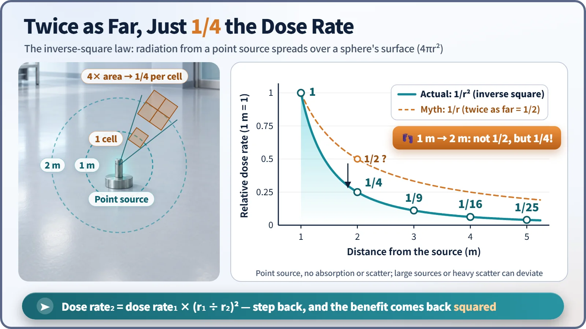
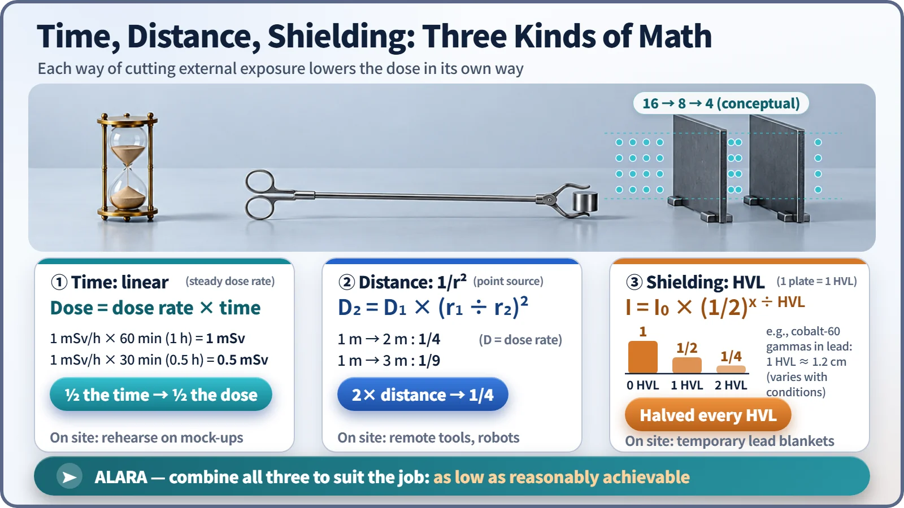

Nuclear & Radiation Basics · 022
Just Like Dodging the Midsummer Sun? — The Three Principles of Radiation Protection: Time, Distance and Shielding
Time cuts the dose proportionally, distance by the square, and shielding by half with every half-value layer.
External radiation dose can be cut three ways: spend less time near the source, stay farther away, and put shielding in between. Each works by different math: time is proportional, distance follows the inverse-square law, and shielding halves the intensity with every half-value layer. ALARA asks that all three be combined to keep doses as low as reasonably achievable. [1]
A trip to the store at 2 p.m. in August
You have to run to the corner store on a scorching afternoon. Without thinking, you go and come back as quickly as you can, hug the shady side of the buildings, and open a sun umbrella if it's still too hot.
Radiation workers follow three rules that look a lot like that: time, distance and shielding, the basic tools for reducing external exposure from a source outside the body. Put them in numbers, though, and one part turns up that the summer-sun analogy can't explain.
Spend less time, get exactly that much less dose
Where there's radiation there is a set dose rate (dose received per hour), and the dose that builds up grows with the time you stay.
Dose = dose rate × time
An hour where the dose rate is 1 millisievert per hour (mSv/h) gives 1 mSv; 30 minutes gives 0.5 mSv. Halve the time and you halve the dose. That's why nuclear plant workers rehearse a job on a full-size mock-up before entering a high-dose area: eliminating one minute of hesitation inside is protection in itself.
Where the shade analogy breaks down: the inverse-square law
The sun is 150 million km away, so walking a few more meters doesn't make sunlight weaker; shade is cool because the building blocks the light. A source in a radiation workplace is different. A small source behaves almost like a single point, and radiation from a point source spreads evenly in all directions over ever-larger spheres whose surface grows as 4πr². So the dose rate falls with the square of the distance. [2]
D₂ = D₁ × (r₁ ÷ r₂)²

If the dose rate at 1 m is 1, then at 2 m it is not 1/2 but 1/4; at 3 m it's 1/9, and at 5 m it's 1/25. Many people assume twice as far means half, but the real drop is much steeper. That's why job sites use long tongs, remote-handling tools and camera-equipped robots: instead of reaching out a hand, you reach out a tool.
The formula holds for small sources. When the source is large, like a long pipe or a big tank, or when you're very close, the dose rate falls more gently than 1/r², so workers measure with a survey meter before the job.
How many layers of umbrella? The half-value layer
Shielding puts material between the source and people, using the fact that radiation loses energy as it collides with atoms. Gamma rays don't stop dead at a wall; each time they pass through a certain thickness they drop by half. That thickness is the half-value layer (HVL).
I = I₀ × (1/2)^(x ÷ HVL)
For gamma rays from cobalt-60, the half-value layer in lead is about 1.2 cm. About 1.2 cm of lead brings the intensity to 1/2, about 2.4 cm to 1/4 and about 3.6 cm to 1/8. Ten half-value layers take it to about 1/1,000, but mathematically never to zero. Which material works best depends on the type of radiation. [3]
| Principle | Relation | Example |
|---|---|---|
| Time | Dose = dose rate × time (proportional) | 1 mSv/h for 30 min → 0.5 mSv |
| Distance | D₂ = D₁ × (r₁ ÷ r₂)² (inverse square) | 1 m → 2 m: 1/4 of the dose rate |
| Shielding | I = I₀ × (1/2)^(x ÷ HVL) | Co-60 gammas, about 2.4 cm of lead: 1/4 |

One word ties them together: ALARA
ALARA stands for As Low As Reasonably Achievable. Legal dose limits are ceilings that must not be exceeded; ALARA says that even below them, doses should be as low as is reasonably possible. [4] [5]
The key word is "reasonably." A lead blanket around a pipe lowers a worker's dose, but the people who install and remove it are exposed too. If installing it costs more dose than it saves, shortening the job and stepping back is better. So during planned maintenance outages, plants estimate the dose for each task and compare combinations of time, distance and shielding to find the lowest total. Workers wear personal electronic dosimeters that show their dose in real time.
A spent fuel pool shows all three at once: several meters of water above the fuel cool it, shield the radiation, and keep workers at a distance.
Key takeaways
Time cuts the dose proportionally, distance by the square, and shielding by half with every half-value layer. Mix them to fit the situation, and don't stop at the limit: go as low as is reasonable. The same rules guide the radiographer stepping behind a shielded wall and the technician inspecting welds, every working day.